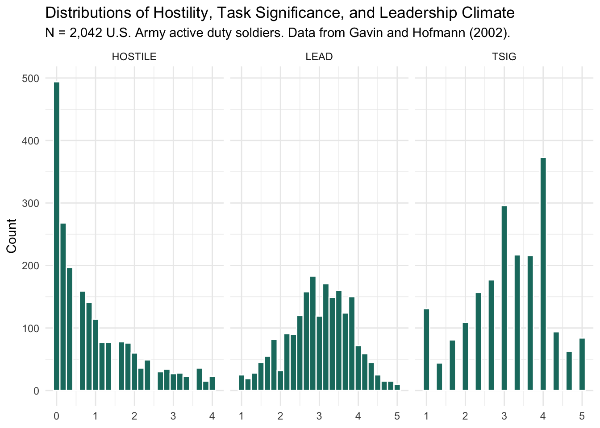
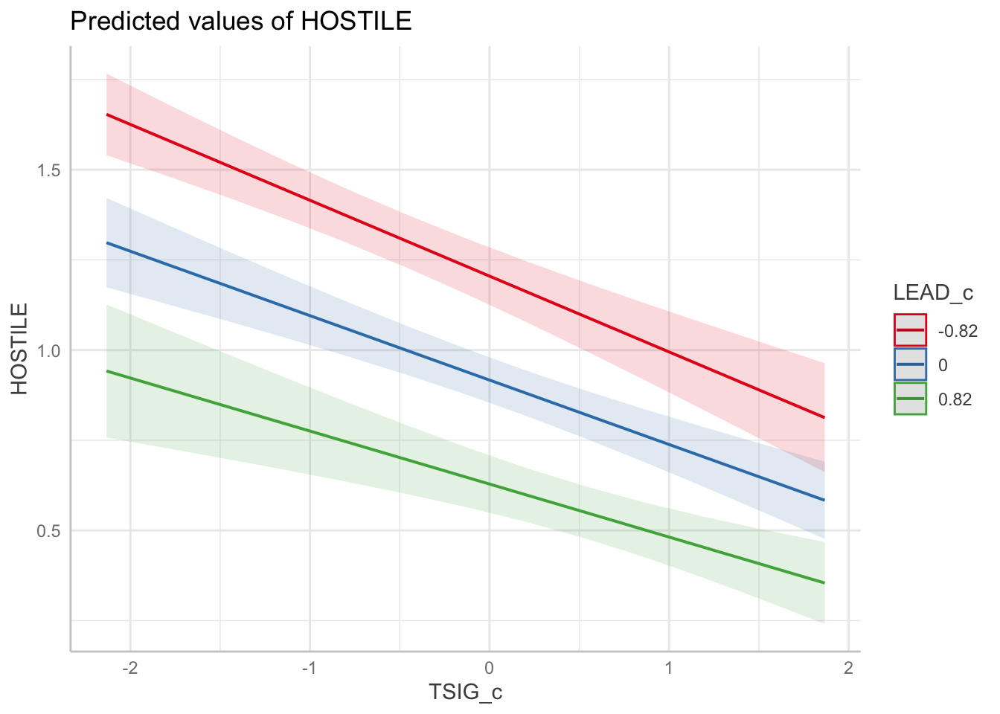

Warning: package 'lme4' was built under R version 4.5.2Warning: package 'lmerTest' was built under R version 4.5.2Warning: package 'performance' was built under R version 4.5.2Warning: package 'modelsummary' was built under R version 4.5.2Data for this chapter: lq2002.csv
This chapter uses data from Gavin and Hofmann (2002), a study of organizational climate and attitudes published in Leadership Quarterly. Here we have 2,042 U.S. Army soldiers nested within companies. The structure is the same as students within schools, which is a useful reminder that multilevel modeling is not about education specifically. Anywhere individuals are grouped, these methods apply. This is the same dataset Garson uses in Chapter 6.
Warning: package 'lme4' was built under R version 4.5.2Warning: package 'lmerTest' was built under R version 4.5.2Warning: package 'performance' was built under R version 4.5.2Warning: package 'modelsummary' was built under R version 4.5.2Rows: 2,042
Columns: 28
$ ROWID <dbl> 1, 2, 3, 4, 5, 6, 7, 8, 9, 10, 11, 12, 13, 14, 15, 16, 17, 18…
$ COMPID <dbl> 2, 2, 2, 2, 2, 2, 2, 2, 2, 2, 2, 2, 2, 2, 2, 2, 2, 2, 2, 2, 2…
$ SUB <dbl> 1, 2, 3, 4, 5, 6, 7, 8, 9, 10, 11, 12, 13, 14, 15, 16, 17, 18…
$ LEAD01 <dbl> 2, 4, 4, 1, 1, 2, 3, 3, 3, 4, 2, 2, 4, 4, 1, 2, 4, 4, 4, 4, 4…
$ LEAD02 <dbl> 2, 4, 4, 1, 1, 3, 2, 3, 4, 3, 4, 3, 4, 4, 1, 1, 5, 4, 5, 4, 2…
$ LEAD03 <dbl> 2, 2, 2, 1, 1, 2, 2, 2, 3, 3, 1, 1, 4, 4, 1, 2, 3, 4, 1, 4, 2…
$ LEAD04 <dbl> 3, 4, 4, 1, 1, 4, 1, 4, 2, 4, 3, 1, 4, 4, 1, 4, 5, 4, 1, 5, 1…
$ LEAD05 <dbl> 2, 4, 2, 1, 3, 2, 2, 2, 3, 3, 1, 2, 4, 4, 1, 3, 3, 4, 1, 2, 2…
$ LEAD06 <dbl> 2, 4, 4, 1, 2, 4, 2, 2, 3, 4, 3, 4, 4, 4, 1, 3, 5, 4, 4, 2, 2…
$ LEAD07 <dbl> 5, 4, 4, 4, 1, 3, 2, 2, 3, 3, 3, 1, 4, 3, 1, 5, 3, 4, 1, 3, 2…
$ LEAD08 <dbl> 5, 4, 4, 2, 1, 4, 2, 4, 1, 4, 4, 3, 4, 4, 1, 2, 5, 4, 1, 3, 2…
$ LEAD09 <dbl> 5, 4, 4, 3, 1, 2, 3, 2, 3, 3, 2, 2, 4, 4, 1, 4, 1, 4, 1, 4, 2…
$ LEAD10 <dbl> 5, 4, 4, 3, 1, 4, 4, 2, 2, 4, 3, 2, 4, 4, 1, 2, 5, 4, 4, 4, 1…
$ LEAD11 <dbl> 4, 3, 2, 2, 1, 3, 2, 4, 3, 3, 2, 1, 4, 4, 1, 2, 4, 4, 1, 4, 2…
$ TSIG01 <dbl> 1, 3, 5, 1, 4, 4, 2, 2, 4, 4, 3, 3, 4, 4, 1, 1, 4, 4, 1, 5, 1…
$ TSIG02 <dbl> 5, 4, 5, 3, 4, 4, 4, 2, 3, 4, 4, 3, 4, 4, 1, 5, 4, 4, 5, 5, 4…
$ TSIG03 <dbl> 5, 3, 5, 2, 4, 4, 4, 4, 4, 4, 3, 3, 4, 4, 1, 4, 5, 4, 5, 5, 4…
$ HOSTIL01 <dbl> 0, 3, 1, 2, 2, 0, 2, 0, 0, 1, 1, 2, 0, 0, 4, 3, 1, 0, 4, 3, 4…
$ HOSTIL02 <dbl> 0, 2, 0, 1, 0, 0, 0, 0, 4, 0, 0, 2, 0, 0, 4, 0, 0, 0, 0, 1, 4…
$ HOSTIL03 <dbl> 0, 0, 0, 3, 0, 0, 1, 0, 4, 0, 0, 0, 0, 0, 4, 0, 0, 0, 4, 2, 2…
$ HOSTIL04 <dbl> 0, 0, 0, 3, 0, 0, 1, 0, 4, 0, 0, 1, 0, 0, 4, 0, 0, 0, 4, 3, 2…
$ HOSTIL05 <dbl> 0, 1, 1, 0, 0, 0, 0, 0, 4, 0, 0, 2, 0, 0, 2, 0, 0, 0, 4, 2, 3…
$ LEAD <dbl> 3.363636, 3.727273, 3.454545, 1.818182, 1.272727, 3.000000, 2…
$ TSIG <dbl> 3.666667, 3.333333, 5.000000, 2.000000, 4.000000, 4.000000, 3…
$ HOSTILE <dbl> 0.0, 1.2, 0.4, 1.8, 0.4, 0.0, 0.8, 0.0, 3.2, 0.2, 0.2, 1.4, 0…
$ GLEAD <dbl> 2.882576, 2.882576, 2.882576, 2.882576, 2.882576, 2.882576, 2…
$ GTSIG <dbl> 3.541667, 3.541667, 3.541667, 3.541667, 3.541667, 3.541667, 3…
$ GHOSTILE <dbl> 1.0416667, 1.0416667, 1.0416667, 1.0416667, 1.0416667, 1.0416…describe(lq2002) vars n mean sd median trimmed mad min max range
ROWID 1 2042 1021.50 589.62 1021.50 1021.50 756.87 1.00 2042.00 2041.00
COMPID 2 2042 28.73 14.15 29.00 28.85 17.79 2.00 58.00 56.00
SUB 3 2042 1021.50 589.62 1021.50 1021.50 756.87 1.00 2042.00 2041.00
LEAD01 4 2042 3.08 1.12 3.00 3.13 1.48 1.00 5.00 4.00
LEAD02 5 2042 3.35 1.10 4.00 3.40 1.48 1.00 5.00 4.00
LEAD03 6 2042 2.59 1.19 3.00 2.56 1.48 1.00 5.00 4.00
LEAD04 7 2042 2.77 1.31 3.00 2.73 1.48 1.00 5.00 4.00
LEAD05 8 2042 2.90 1.11 3.00 2.93 1.48 1.00 5.00 4.00
LEAD06 9 2042 3.41 1.03 4.00 3.48 1.48 1.00 5.00 4.00
LEAD07 10 2042 2.86 1.19 3.00 2.87 1.48 1.00 5.00 4.00
LEAD08 11 2042 3.35 1.08 4.00 3.43 1.48 1.00 5.00 4.00
LEAD09 12 2042 2.67 1.20 3.00 2.65 1.48 1.00 5.00 4.00
LEAD10 13 2042 3.14 1.16 3.00 3.21 1.48 1.00 5.00 4.00
LEAD11 14 2042 2.88 1.17 3.00 2.91 1.48 1.00 5.00 4.00
TSIG01 15 2042 2.81 1.26 3.00 2.79 1.48 1.00 5.00 4.00
TSIG02 16 2042 3.28 1.16 3.50 3.35 0.74 1.00 5.00 4.00
TSIG03 17 2042 3.31 1.13 4.00 3.39 1.48 1.00 5.00 4.00
HOSTIL01 18 2042 1.49 1.39 1.00 1.36 1.48 0.00 4.00 4.00
HOSTIL02 19 2042 0.62 1.10 0.00 0.36 0.00 0.00 4.00 4.00
HOSTIL03 20 2042 1.09 1.43 0.00 0.86 0.00 0.00 4.00 4.00
HOSTIL04 21 2042 0.92 1.37 0.00 0.65 0.00 0.00 4.00 4.00
HOSTIL05 22 2042 0.61 1.04 0.00 0.37 0.00 0.00 4.00 4.00
LEAD 23 2042 3.00 0.82 3.00 3.02 0.81 1.00 5.00 4.00
TSIG 24 2042 3.13 1.02 3.33 3.18 0.99 1.00 5.00 4.00
HOSTILE 25 2042 0.95 1.04 0.60 0.77 0.89 0.00 4.00 4.00
GLEAD 26 2042 3.00 0.27 2.98 2.99 0.28 2.38 3.74 1.36
GTSIG 27 2042 3.13 0.32 3.12 3.13 0.40 2.54 3.78 1.24
GHOSTILE 28 2042 0.95 0.28 0.91 0.94 0.33 0.22 1.52 1.31
skew kurtosis se
ROWID 0.00 -1.20 13.05
COMPID 0.00 -0.84 0.31
SUB 0.00 -1.20 13.05
LEAD01 -0.27 -0.76 0.02
LEAD02 -0.51 -0.56 0.02
LEAD03 0.13 -1.04 0.03
LEAD04 -0.01 -1.28 0.03
LEAD05 -0.23 -0.64 0.02
LEAD06 -0.62 0.11 0.02
LEAD07 -0.17 -0.98 0.03
LEAD08 -0.71 -0.17 0.02
LEAD09 0.02 -1.08 0.03
LEAD10 -0.52 -0.72 0.03
LEAD11 -0.17 -0.98 0.03
TSIG01 -0.07 -1.18 0.03
TSIG02 -0.52 -0.54 0.03
TSIG03 -0.57 -0.40 0.03
HOSTIL01 0.53 -1.00 0.03
HOSTIL02 1.84 2.43 0.02
HOSTIL03 1.01 -0.46 0.03
HOSTIL04 1.27 0.16 0.03
HOSTIL05 1.81 2.52 0.02
LEAD -0.21 -0.32 0.02
TSIG -0.38 -0.47 0.02
HOSTILE 1.20 0.55 0.02
GLEAD 0.36 0.34 0.01
GTSIG 0.16 -1.05 0.01
GHOSTILE 0.15 -0.71 0.01The variables we care about are HOSTILE (a scale score for hostility, our outcome), TSIG (task significance), LEAD (leadership climate), and COMPID (company, our clustering variable). The variables beginning with G are group-level aggregates, which will matter later in this chapter.
Before modeling, a short detour that is worth its own section. The HOSTILE variable is a scale score built from five individual items. It is good practice to verify that a scale you have been handed actually hangs together, and Cronbach’s alpha is the standard first check.
hostile_items <- lq2002 |>
select(HOSTIL01, HOSTIL02, HOSTIL03, HOSTIL04, HOSTIL05)
psych::alpha(hostile_items)
Reliability analysis
Call: psych::alpha(x = hostile_items)
raw_alpha std.alpha G6(smc) average_r S/N ase mean sd median_r
0.87 0.88 0.87 0.59 7.1 0.0044 0.95 1 0.56
95% confidence boundaries
lower alpha upper
Feldt 0.86 0.87 0.88
Duhachek 0.86 0.87 0.88
Reliability if an item is dropped:
raw_alpha std.alpha G6(smc) average_r S/N alpha se var.r med.r
HOSTIL01 0.86 0.86 0.85 0.61 6.2 0.0050 0.00979 0.58
HOSTIL02 0.85 0.86 0.83 0.60 6.0 0.0052 0.00941 0.56
HOSTIL03 0.84 0.85 0.81 0.58 5.5 0.0057 0.00089 0.57
HOSTIL04 0.83 0.84 0.80 0.56 5.1 0.0061 0.00172 0.55
HOSTIL05 0.85 0.85 0.83 0.59 5.8 0.0053 0.01032 0.56
Item statistics
n raw.r std.r r.cor r.drop mean sd
HOSTIL01 2042 0.80 0.79 0.70 0.66 1.49 1.4
HOSTIL02 2042 0.78 0.80 0.73 0.68 0.62 1.1
HOSTIL03 2042 0.85 0.83 0.80 0.73 1.09 1.4
HOSTIL04 2042 0.87 0.86 0.84 0.77 0.92 1.4
HOSTIL05 2042 0.79 0.81 0.74 0.69 0.61 1.0
Non missing response frequency for each item
0 1 2 3 4 miss
HOSTIL01 0.32 0.25 0.17 0.13 0.13 0
HOSTIL02 0.67 0.17 0.07 0.04 0.05 0
HOSTIL03 0.53 0.17 0.09 0.08 0.12 0
HOSTIL04 0.60 0.15 0.08 0.07 0.10 0
HOSTIL05 0.66 0.18 0.08 0.04 0.03 0Alpha is reported in the raw_alpha column of the output. Conventional cutoffs put acceptable reliability somewhere above .70, though the right threshold depends on what the scale is for. Pay attention to the item-level output as well. If dropping one item would raise alpha substantially, that item may not belong.
You can also build the scale score yourself rather than trusting one you were given:
keys <- list(hostile = c("HOSTIL01", "HOSTIL02", "HOSTIL03", "HOSTIL04", "HOSTIL05"))
scored <- psych::scoreItems(keys, lq2002, impute = "none")
lq2002 <- lq2002 |>
mutate(hostile_mine = as.numeric(scored$scores[, "hostile"]))
# Does our version match the one in the file?
cor(lq2002$HOSTILE, lq2002$hostile_mine, use = "complete.obs")[1] 1A correlation of essentially 1.0 confirms the existing variable was constructed the way we think it was.
lq2002 |>
select(HOSTILE, TSIG, LEAD) |>
pivot_longer(everything(), names_to = "variable", values_to = "score") |>
ggplot(aes(x = score)) +
geom_histogram(bins = 25, fill = "#1a7a6e", color = "white") +
facet_wrap(~variable, scales = "free_x") +
labs(
title = "Distributions of Hostility, Task Significance, and Leadership Climate",
subtitle = "N = 2,042 U.S. Army active duty soldiers. Data from Gavin and Hofmann (2002).",
x = NULL, y = "Count"
) +
theme_minimal()
As always, we start by asking whether there is any company-level clustering to model.
Linear mixed model fit by maximum likelihood . t-tests use Satterthwaite's
method [lmerModLmerTest]
Formula: HOSTILE ~ 1 + (1 | COMPID)
Data: lq2002
AIC BIC logLik -2*log(L) df.resid
5888.9 5905.8 -2941.5 5882.9 2039
Scaled residuals:
Min 1Q Median 3Q Max
-1.3826 -0.7294 -0.3230 0.5086 3.1628
Random effects:
Groups Name Variance Std.Dev.
COMPID (Intercept) 0.05765 0.2401
Residual 1.01668 1.0083
Number of obs: 2042, groups: COMPID, 49
Fixed effects:
Estimate Std. Error df t value Pr(>|t|)
(Intercept) 0.90632 0.04308 47.30598 21.04 <2e-16 ***
---
Signif. codes: 0 '***' 0.001 '**' 0.01 '*' 0.05 '.' 0.1 ' ' 1performance::icc(model_null)# Intraclass Correlation Coefficient
Adjusted ICC: 0.054
Unadjusted ICC: 0.054ranova(model_null)ANOVA-like table for random-effects: Single term deletions
Model:
HOSTILE ~ 1 + (1 | COMPID)
npar logLik AIC LRT Df Pr(>Chisq)
<none> 3 -2941.5 5888.9
(1 | COMPID) 2 -2970.2 5944.3 57.4 1 3.556e-14 ***
---
Signif. codes: 0 '***' 0.001 '**' 0.01 '*' 0.05 '.' 0.1 ' ' 1Note that the ICC here is considerably smaller than the one we found for schools and math achievement. That is substantively interesting rather than a problem. Soldiers’ hostility is mostly an individual matter, with companies accounting for a modest share of the variation. A small ICC does not mean you should abandon multilevel modeling, particularly when you have company-level predictors you want to test.
Linear mixed model fit by maximum likelihood . t-tests use Satterthwaite's
method [lmerModLmerTest]
Formula: HOSTILE ~ TSIG + (1 | COMPID)
Data: lq2002
AIC BIC logLik -2*log(L) df.resid
5668.4 5690.9 -2830.2 5660.4 2038
Scaled residuals:
Min 1Q Median 3Q Max
-1.9601 -0.7135 -0.2688 0.4734 3.4848
Random effects:
Groups Name Variance Std.Dev.
COMPID (Intercept) 0.02817 0.1678
Residual 0.91938 0.9588
Number of obs: 2042, groups: COMPID, 49
Fixed effects:
Estimate Std. Error df t value Pr(>|t|)
(Intercept) 1.96574 0.07574 566.72651 25.95 <2e-16 ***
TSIG -0.33180 0.02145 1995.20590 -15.47 <2e-16 ***
---
Signif. codes: 0 '***' 0.001 '**' 0.01 '*' 0.05 '.' 0.1 ' ' 1
Correlation of Fixed Effects:
(Intr)
TSIG -0.894The coefficient for TSIG describes how hostility differs between two soldiers who differ by one unit in task significance. Because TSIG varies both within and between companies, this estimate blends those two comparisons. We will separate them shortly.
Linear mixed model fit by maximum likelihood . t-tests use Satterthwaite's
method [lmerModLmerTest]
Formula: HOSTILE ~ TSIG + LEAD + (1 | COMPID)
Data: lq2002
AIC BIC logLik -2*log(L) df.resid
5540.7 5568.9 -2765.4 5530.7 2037
Scaled residuals:
Min 1Q Median 3Q Max
-2.3574 -0.6918 -0.2278 0.5180 3.4823
Random effects:
Groups Name Variance Std.Dev.
COMPID (Intercept) 0.02028 0.1424
Residual 0.86544 0.9303
Number of obs: 2042, groups: COMPID, 49
Fixed effects:
Estimate Std. Error df t value Pr(>|t|)
(Intercept) 2.56714 0.08847 923.85117 29.017 < 2e-16 ***
TSIG -0.18610 0.02434 1948.98020 -7.646 3.24e-14 ***
LEAD -0.35010 0.03021 1930.37022 -11.588 < 2e-16 ***
---
Signif. codes: 0 '***' 0.001 '**' 0.01 '*' 0.05 '.' 0.1 ' ' 1
Correlation of Fixed Effects:
(Intr) TSIG
TSIG -0.328
LEAD -0.577 -0.523Does the relationship between task significance and hostility depend on leadership climate? An interaction between two level-one predictors asks exactly that.
Linear mixed model fit by maximum likelihood . t-tests use Satterthwaite's
method [lmerModLmerTest]
Formula: HOSTILE ~ TSIG * LEAD + (1 | COMPID)
Data: lq2002
AIC BIC logLik -2*log(L) df.resid
5539.6 5573.3 -2763.8 5527.6 2036
Scaled residuals:
Min 1Q Median 3Q Max
-2.5016 -0.6809 -0.2376 0.5107 3.4871
Random effects:
Groups Name Variance Std.Dev.
COMPID (Intercept) 0.02012 0.1419
Residual 0.86416 0.9296
Number of obs: 2042, groups: COMPID, 49
Fixed effects:
Estimate Std. Error df t value Pr(>|t|)
(Intercept) 2.89374 0.20342 2001.95172 14.225 < 2e-16 ***
TSIG -0.29435 0.06543 2040.19886 -4.499 7.23e-06 ***
LEAD -0.47236 0.07498 2039.10534 -6.300 3.63e-10 ***
TSIG:LEAD 0.03858 0.02166 2029.77741 1.781 0.075 .
---
Signif. codes: 0 '***' 0.001 '**' 0.01 '*' 0.05 '.' 0.1 ' ' 1
Correlation of Fixed Effects:
(Intr) TSIG LEAD
TSIG -0.889
LEAD -0.925 0.771
TSIG:LEAD 0.901 -0.928 -0.915Interactions are much easier to understand as pictures than as coefficients:
Warning: package 'ggeffects' was built under R version 4.5.2
Whether the interaction earns its place in the model is a separate question from whether it is significant. We can test it directly:
anova(model_2, model_3)Data: lq2002
Models:
model_2: HOSTILE ~ TSIG + LEAD + (1 | COMPID)
model_3: HOSTILE ~ TSIG * LEAD + (1 | COMPID)
npar AIC BIC logLik -2*log(L) Chisq Df Pr(>Chisq)
model_2 5 5540.7 5568.9 -2765.4 5530.7
model_3 6 5539.6 5573.3 -2763.8 5527.6 3.1706 1 0.07498 .
---
Signif. codes: 0 '***' 0.001 '**' 0.01 '*' 0.05 '.' 0.1 ' ' 1GTSIG and GLEAD are company averages. Adding them alongside the individual-level versions is not redundancy, even though it looks like it at first glance. These two coefficients answer different questions.
The individual-level coefficient asks: within a given company, do soldiers who report higher task significance report less hostility? The group-level coefficient asks: do companies with higher average task significance have lower hostility overall? A soldier can be high on task significance in a company where everyone is low, or low in a company where everyone is high. Those are different situations, and they can have different consequences.
model_4 <- lmer(HOSTILE ~ TSIG + LEAD + GTSIG + (1 | COMPID), data = lq2002, REML = FALSE)
summary(model_4)Linear mixed model fit by maximum likelihood . t-tests use Satterthwaite's
method [lmerModLmerTest]
Formula: HOSTILE ~ TSIG + LEAD + GTSIG + (1 | COMPID)
Data: lq2002
AIC BIC logLik -2*log(L) df.resid
5533.7 5567.4 -2760.8 5521.7 2036
Scaled residuals:
Min 1Q Median 3Q Max
-2.3166 -0.6960 -0.2211 0.5170 3.4998
Random effects:
Groups Name Variance Std.Dev.
COMPID (Intercept) 0.009905 0.09952
Residual 0.867050 0.93116
Number of obs: 2042, groups: COMPID, 49
Fixed effects:
Estimate Std. Error df t value Pr(>|t|)
(Intercept) 3.40718 0.25785 42.52614 13.214 < 2e-16 ***
TSIG -0.17234 0.02479 2041.22422 -6.953 4.79e-12 ***
LEAD -0.35177 0.02996 1824.44441 -11.741 < 2e-16 ***
GTSIG -0.27729 0.08258 46.65424 -3.358 0.00157 **
---
Signif. codes: 0 '***' 0.001 '**' 0.01 '*' 0.05 '.' 0.1 ' ' 1
Correlation of Fixed Effects:
(Intr) TSIG LEAD
TSIG 0.105
LEAD -0.205 -0.511
GTSIG -0.942 -0.227 0.010model_5 <- lmer(HOSTILE ~ TSIG + LEAD + GTSIG + GLEAD + (1 | COMPID), data = lq2002, REML = FALSE)
summary(model_5)Linear mixed model fit by maximum likelihood . t-tests use Satterthwaite's
method [lmerModLmerTest]
Formula: HOSTILE ~ TSIG + LEAD + GTSIG + GLEAD + (1 | COMPID)
Data: lq2002
AIC BIC logLik -2*log(L) df.resid
5535.2 5574.6 -2760.6 5521.2 2035
Scaled residuals:
Min 1Q Median 3Q Max
-2.3187 -0.6941 -0.2225 0.5113 3.4930
Random effects:
Groups Name Variance Std.Dev.
COMPID (Intercept) 0.009737 0.09868
Residual 0.866974 0.93111
Number of obs: 2042, groups: COMPID, 49
Fixed effects:
Estimate Std. Error df t value Pr(>|t|)
(Intercept) 3.52131 0.31006 46.68490 11.357 4.95e-15 ***
TSIG -0.17486 0.02508 1998.05166 -6.971 4.27e-12 ***
LEAD -0.34583 0.03132 1998.05165 -11.042 < 2e-16 ***
GTSIG -0.24989 0.09273 49.35128 -2.695 0.0096 **
GLEAD -0.06981 0.10715 74.02590 -0.651 0.5168
---
Signif. codes: 0 '***' 0.001 '**' 0.01 '*' 0.05 '.' 0.1 ' ' 1
Correlation of Fixed Effects:
(Intr) TSIG LEAD GTSIG
TSIG 0.000
LEAD 0.000 -0.528
GTSIG -0.437 -0.271 0.143
GLEAD -0.559 0.154 -0.292 -0.460Watch what happens to the company-level variance as you move from the null model through model 5. Adding level-two predictors should reduce it, because those predictors are explaining some of the between-company differences that the null model could only describe.
Reporting six models one summary() at a time is unreadable. A single comparison table is how this belongs in a paper. Older versions of these course materials used stargazer for this. That package is no longer maintained and breaks with recent versions of R, so we use modelsummary instead.
modelsummary(
list(
"Null" = model_null,
"M1" = model_1,
"M2" = model_2,
"M3: Int" = model_3,
"M4" = model_4,
"M5" = model_5
),
stars = c("*" = .05, "**" = .01, "***" = .001),
gof_map = c("nobs", "aic", "bic"),
title = "Multilevel models predicting hostility among U.S. Army soldiers"
)| Null | M1 | M2 | M3: Int | M4 | M5 | |
|---|---|---|---|---|---|---|
| * p < 0.05, ** p < 0.01, *** p < 0.001 | ||||||
| (Intercept) | 0.906*** | 1.966*** | 2.567*** | 2.894*** | 3.407*** | 3.521*** |
| (0.043) | (0.076) | (0.088) | (0.203) | (0.258) | (0.310) | |
| TSIG | -0.332*** | -0.186*** | -0.294*** | -0.172*** | -0.175*** | |
| (0.021) | (0.024) | (0.065) | (0.025) | (0.025) | ||
| LEAD | -0.350*** | -0.472*** | -0.352*** | -0.346*** | ||
| (0.030) | (0.075) | (0.030) | (0.031) | |||
| TSIG × LEAD | 0.039 | |||||
| (0.022) | ||||||
| GTSIG | -0.277*** | -0.250** | ||||
| (0.083) | (0.093) | |||||
| GLEAD | -0.070 | |||||
| (0.107) | ||||||
| SD (Intercept COMPID) | 0.240 | 0.168 | 0.142 | 0.142 | 0.100 | 0.099 |
| SD (Observations) | 1.008 | 0.959 | 0.930 | 0.930 | 0.931 | 0.931 |
| Num.Obs. | 2042 | 2042 | 2042 | 2042 | 2042 | 2042 |
| AIC | 5893.4 | 5679.2 | 5557.0 | 5561.6 | 5553.4 | 5557.6 |
| BIC | 5910.3 | 5701.6 | 5585.1 | 5595.3 | 5587.1 | 5596.9 |
modelsummary() will also write this table straight to a Word or LaTeX file, which is worth knowing when you are assembling a manuscript:
modelsummary(
list("Null" = model_null, "M5" = model_5),
output = "hostility_models.docx"
)Three ideas are worth carrying forward. Level-one and level-two versions of the same construct answer different questions and belong in the model together. Variance components tell a story as you build models, and watching them shrink is how you know where your predictors are doing work. And an interaction is much easier to defend when you can show someone the plot.
In the next chapter we relax an assumption we have been making all along, that the relationship between a predictor and the outcome is identical in every group.